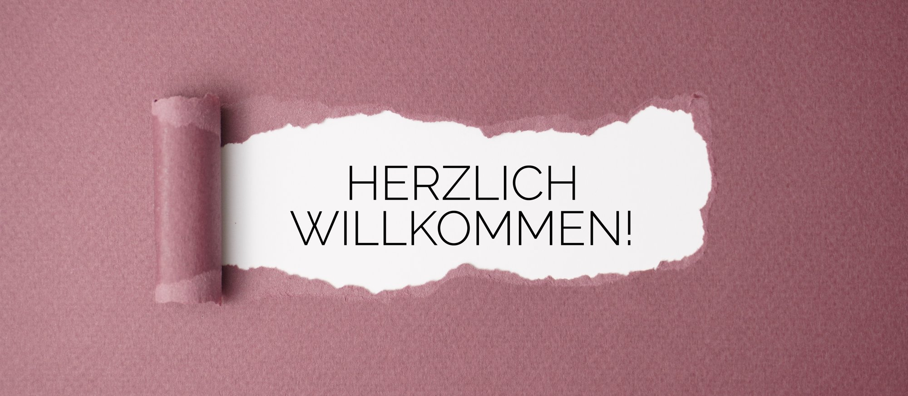
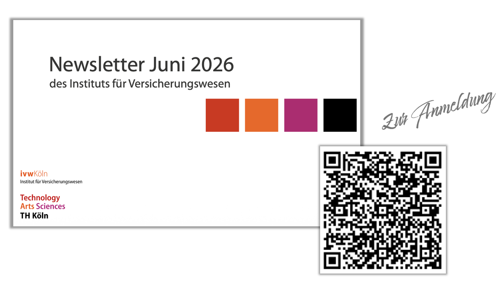
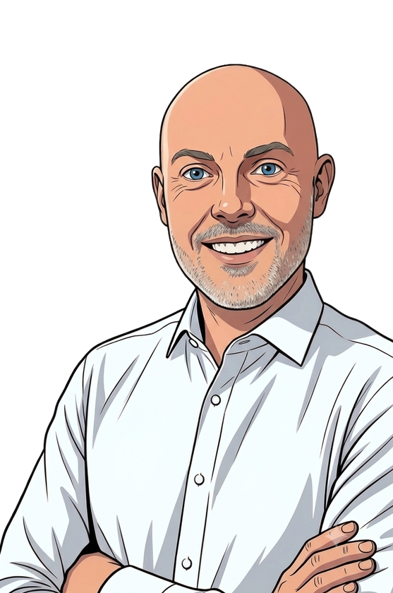
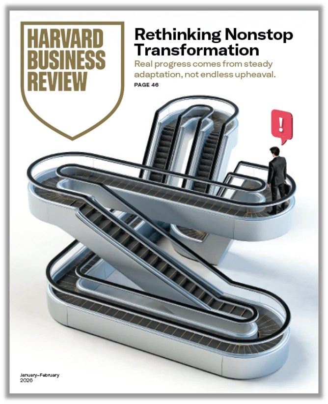

Erste Vorlesung · Erstes Semester · Wintersemester 2026/27
Prof. Dr. Dominik Orbach · Institut für Versicherungswesen · TH Köln
Donnerstag, 8. Oktober 2026 · Hörsaal 284, 9:45 bis 11:15 Uhr · parallel als Zoom-Sitzung, 13:30 bis 15:00 Uhr
Zwei Videobotschaften
Bevor ich etwas über dieses Studium erzähle, lasse ich zwei zu Wort kommen, die es abgeschlossen haben. Beide saßen vor einigen Jahren auf Ihren Plätzen.
Kapitel 01 · Einführung
Sie studieren an einem Institut, das es in dieser Form in Deutschland kein zweites Mal gibt.
ivwKöln
Das Hochschulinstitut für Versicherung und Risikomanagement
Wir verzahnen Lehre, Forschung und Praxis.
Bachelor und Master, klassisch oder dual. Unterrichtet von Menschen, die beide Seiten kennen — die Hochschule und den Betrieb.
Vier Forschungsstellen arbeiten an Fragen, die die Branche gerade umtreiben. Was dort entsteht, landet im selben Semester in der Vorlesung.
Ein Förderverein aus 170 Unternehmen bringt die Branche ins Haus: als Lehrbeauftragte, als Gastredner, als Arbeitgeber.
Das Hochschulinstitut für Versicherung und Risikomanagement.
Dazu: drei laufende Promotionen und der größte BWL-Alumni-Verein Deutschlands.

Zweimal im Jahr, kostenlos, dazu gelegentlich ein Hinweis auf eine Veranstaltung des Instituts. Abbestellen können Sie ihn jederzeit.
QR-Code scannen oder hier entlang:
Newsletter abonnieren
Diese Vorlesung kommt deshalb aus zwei Richtungen: Modelle aus dem Lehrbuch und Entscheidungen, die ich selbst zu verantworten hatte — inklusive der Fehlgriffe.
Zwei Minuten · bitte mit der Person neben Ihnen
Sie sitzen hier mit rund 180 Menschen, mit denen Sie die nächsten Jahre verbringen. Die Wahrscheinlichkeit, dass eine davon später Ihre Chefin, Ihr Geschäftspartner oder Ihre Mitgründerin ist, liegt deutlich über null.
Kapitel 02 · Organisation
Vierzehn Termine, ein Projekt, eine Klausur. Was am Ende in Ihrem Kopf sein soll, steht hier — und zwar getrennt nach dem Was, dem Womit und dem Wozu.
Methodisches Fundament für alles Weitere. Heute, Kapitel 03.
Ökonomische Grundbegriffe, das Unternehmen als System im Zusammenspiel mit Umwelt und Anspruchsgruppen.
Einschließlich ethischer und nachhaltigkeitsbezogener Konflikte — in Fallbeispielen und Gruppenarbeiten.
Produkt-, Konditionen-, Distributions- und Kommunikationspolitik, vertieft an Praxisbeispielen aus der Versicherungswirtschaft.
Grundfunktionen des Personalmanagements, Aufbau- und Ablauforganisation, aktuelle Organisationsformen.
Was verändert sich dadurch in jedem einzelnen Funktionsbereich? Diese Frage begleitet uns durchgehend.
Die vertiefenden Module bauen darauf auf. Ohne dieses Fundament wird es im dritten Semester unangenehm.
Sie können nur zwischen Dingen wählen, die Sie kennen. Dieses Semester zeigt Ihnen die Auswahl.
Unternehmerische Entscheidungen auf Grundlage eines wissenschaftlich fundierten, funktionsübergreifenden Verständnisses treffen.
Semesterplan · Oktober bis Dezember
Semesterplan · Dezember bis Januar
Einordnung
Thommen und Achleitner gliedern die Allgemeine BWL in zehn Teile. Vier davon sind dieses Semester, der Rest verteilt sich über Ihr Studium.
BWL 1 und BWL 2
BWL 1 — fünf Termine
BWL 1
BWL 1
BWL 2
Eigenes Modul
4. Semester
Hier nicht behandelt
Die Versicherungsbetriebslehre im kommenden Sommersemester baut direkt auf dieser Veranstaltung auf.
Literatur
Thommen, J.-P.; Achleitner, A.-K.: Allgemeine Betriebswirtschaftslehre. Umfassende Einführung aus managementtheoretischer Sicht. 10. Auflage, Wiesbaden 2023. Anschaffung empfohlen.
Thommen; Achleitner; Poech: Arbeitsbuch — Repetitionsfragen, Aufgaben, Lösungen. 9. Auflage, Wiesbaden 2022.
Spoun, S.; Domnik, D. B.: Erfolgreich studieren. München 2004. ISBN 3-8273-7129-5.
Stickel-Wolf, S.; Wolf, J.: Wissenschaftliches Arbeiten und Lerntechniken. 10. Auflage 2022. ISBN 978-3658371340.
Arbeitsfläche
Wir arbeiten das ganze Semester auf einem gemeinsamen Board. Probieren Sie jetzt aus, welcher Zugang bei Ihnen funktioniert. Drei Wege führen hinein.
Über den Onboarding-Link, den ich im Hörsaal einblende und in ILU hinterlege. Damit gehört Ihnen das Board dauerhaft mit.
Wenn nichts davon klappt: eine Mail an dominik.orbach@th-koeln.de, dann lade ich Sie persönlich ein.
Kapitel 03 · Wissenschaftstheorie
Sie können wissenschaftliche Aussagen und Vorgehensweisen kritisch einordnen und den kritischen Rationalismus als Grundposition wissenschaftlichen Arbeitens erläutern. Dafür brauchen wir: die Grundlagen, die neun Arbeitsschritte des Forschens und ein Praxisbeispiel.
Sie sucht Antworten auf Fragen, die unterhalb jedes Fachinhalts liegen:
Das ist die eine Bedingung, hinter die keine Wissenschaft zurückfallen darf:
Generationen von Forschenden haben ihn zusammengetragen. Wer forscht, nutzt den Berg als Rohstoff, verarbeitet und rekombiniert ihn — und trägt selbst wieder dazu bei. Ihre Hausarbeit ist eine Handvoll Geröll. Aber sie ist Ihre.
Beschreibung und Interpretation machen komplexe Sachverhalte greifbar: Bevölkerungsstatistik, Konjunkturbarometer, Fallstudien in Unternehmen.
Strittig: Ist das schon Forschung — oder nur deren Vorstufe?
Sie baut auf der Beschreibung auf und sucht Ursachen und Begründungen.
Merksatz: Beschreiben ohne Erklären ist möglich. Erklären ohne Beschreiben nicht.
Interaktiv · bitte mitklicken
Klicken Sie einen Schritt an. Darunter sehen Sie, was er bedeutet — und wie er im Praxisbeispiel „Klimarisiken und Versicherer“ konkret aussieht.
Wachsende Klimarisiken mit gravierenden Folgen für Lebensraum, Gesundheit, Wirtschaft, Migration und Sicherheit — für Versicherer ist das keine akademische Frage, sondern eine Kalkulationsfrage. Wir gehen das Beispiel Schritt für Schritt durch.
Hausaufgabe bis zum 15. Oktober: dieselben neun Schritte für das Thema Künstliche Intelligenz. Die vollständige Aufgabe steht am Ende dieser Sitzung.
Interaktiv · fünf Begriffe
Fünf Begriffe, die in Ihren Arbeiten ständig vorkommen und ständig verwechselt werden. Auf der nächsten Folie ordnen Sie sie zu.
Interaktiv · Zuordnung
Welche Aussage ist eine Definition, welche ein Axiom, ein Postulat, eine Hypothese, eine Theorie? Genau eine Zuordnung pro Begriff.
Recherche
Bevor wir Quellen bewerten: Wo finden Sie überhaupt welche? Zwei Adressen, an die im ersten Semester kaum jemand denkt.
Was im offenen Netz hinter einer Bezahlschranke liegt, ist für Sie oft längst bezahlt. Mit Hochschul-Login auch von zu Hause.

Managementzeitschrift aus dem Verlag der Harvard Business School: redaktionell betreut, fachlich solide — aber kein begutachtetes Journal.
Interaktiv · Quellenkritik
Diese sechs Quellen habe ich tatsächlich verwendet, um die fünf Aussagen oben zu belegen. Entscheiden Sie für jede: in einer Hausarbeit zitierfähig, mit Vorbehalt nutzbar, oder besser nicht?
Keine dieser Quellen ist „falsch“. Sie unterscheiden sich darin, ob ein Prüfverfahren dahintersteht, ob die Autorschaft nachvollziehbar ist und ob die Aussage anderswo abgesichert werden kann. Genau das meint intersubjektive Überprüfbarkeit — und genau danach schaue ich in Ihren Arbeiten.
Konsequenz
Erkenntnisfortschritt entsteht durch Irrtum. Erweitern Sie den Wissensberg der Gesellschaft und nutzen Sie wissenschaftlich fundierte Quellen.
Die Bereitschaft, die Argumente anderer zu hören und ernsthaft zu prüfen — auch die unbequemen.
Beides ist keine Selbstverständlichkeit. Schützen und fordern Sie es.
Auch nicht meine. Dazu gehört die Forderung nach Demokratie als Institution, in der Herrschende zur Rechenschaft gezogen und abgewählt werden können.
Kapitel 04 · Projekt
Ab der kommenden Woche arbeiten Sie in Gruppen an einem echten Unternehmen. Am 10. Dezember stellen Sie Ihr Ergebnis vor — vor Ort, alle zusammen. Details folgen nächste Woche, hier ist der Rahmen.
Suchen Sie sich in der Gruppe ein Unternehmen aus den Top 100 Brands des Interbrand-Rankings aus. Analysieren Sie es mit den Werkzeugen, die wir im Semester erarbeiten, und präsentieren Sie das Ergebnis so, dass die anderen etwas davon haben. Zwei Vorlesungstermine sind reine Arbeitszeit, ich bin dabei ansprechbar.
Das Ranking finden Sie unter interbrand.com/best-global-brands — maßgeblich ist die zuletzt veröffentlichte Ausgabe.
Ihr Auftrag bis zum 15. Oktober
Drei Schritte, mehr ist es diese Woche nicht. Ausführlich besprechen wir das Projekt in der kommenden Vorlesung.
Bilden Sie Gruppen zu je fünf Personen. Achten Sie dabei auf eine Frage, die wichtiger ist, als sie klingt: Wollen Sie vor Ort oder digital arbeiten?
Zwei Vorlesungseinheiten stelle ich als Arbeitszeit zur Verfügung. Wer vor Ort arbeiten möchte, sollte in einer Gruppe sein, die an diesen Terminen auch vor Ort ist.
Suchen Sie sich ein Unternehmen aus den Top 100 Brands des Interbrand-Rankings aus.
interbrand.com/best-global-brands
Wer zuerst kommt, mahlt zuerst: Jedes Unternehmen wird nur einmal vergeben.
Mit Gruppe: ein Post-it mit den Vor- und Nachnamen aller fünf Personen und dem gewählten Unternehmen.
Ohne Gruppe: ein Post-it mit Ihrem Vor- und Nachnamen — und schieben Sie es in die Spalte vor Ort oder digital. So finden Sie zueinander.
Die Rahmenparameter
Fünf Termine, die Sie sich notieren sollten. Zwei davon sind Arbeitszeit, die ich Ihnen zur Verfügung stelle. Nach der Abgabe bewerten Sie einander: Jede und jeder begutachtet fünf zufällig zugeloste Projekte, die fünf bestbewerteten Arbeiten präsentieren im Finale.
Das sind die Rahmenparameter. Für die Details, die Bewertungskriterien und Ihre Fragen nehmen wir uns in der kommenden Vorlesung ausführlich Zeit.
Referenzbeispiel
Ich habe die Aufgabe selbst gemacht. Das Ergebnis ist eine Unternehmensanalyse von Nike — vom Kofferraum-Verkauf 1964 bis zum Geschäftsjahr 2026, mit Marketing-Mix, fünf Strategiemodellen, Organigramm, Zahlen und einem begründeten Investment-Urteil. Wir gehen sie gleich gemeinsam durch.
Jede Zahl trägt eine Quellenziffer, jede Quelle ein Abrufdatum. Geschäftsbericht vor Presseartikel, Presseartikel vor Blog.
Porter, Ansoff, Keller, SWOT, Five Forces — jedes Modell beantwortet eine andere Frage. Wer ein Modell nur abbildet, hat es nicht angewendet.
Die Analyse mündet in eine begründete Einschätzung — mit den Argumenten dagegen daneben.
Kapitel 05 · Feedback
Zum Abschluss messen wir diese Vorlesung mit derselben Kennzahl, mit der ich jahrelang Kundenkontakte gemessen habe. Sie lernen die Methode kennen und wenden sie gleich auf diese Vorlesung an.
Der Net Promoter Score ist seit Jahren im Einsatz, um Kundenkontaktpunkte zu messen und zu optimieren. Sein Reiz liegt in der Standardisierung: eine Frage, eine Skala, eine Rechenvorschrift. Das schafft Vergleichbarkeit über Kontaktpunkte, Zeiträume und Wettbewerber hinweg.
Standardfrage: Wie wahrscheinlich ist es, dass Sie den Kundenservice einer Freundin oder einem Freund weiterempfehlen?
NPS = Anteil Promotoren minus Anteil Detraktoren, in Prozentpunkten. Der Wert liegt zwischen minus 100 und plus 100. Kundenzufriedenheit wird damit zu einem strategischen Ziel, das messbar und vergleichbar ist, etwa als Position unter den besten fünf im Markt.
Klicken Sie eine Zahl an, um die Logik zu sehen. Diese Auswahl bleibt auf Ihrem Gerät und zählt nicht. Gezählt wird gleich die echte Umfrage auf der nächsten Folie.
Die Werte stehen auf dem Beispiel aus der Praxis: 100 Antworten, und trotz 30 Prozent begeisterter Kunden landet der Wert bei null.
Die Lehre daraus: Passive sind im NPS unsichtbar. Wer sie ignoriert, übersieht die größte Gruppe. Und wer Detraktoren um einen einzigen Punkt nach oben bewegt, bewegt die Kennzahl gar nicht, solange sie unter sieben bleiben.
Jetzt echt · zwei Minuten
Bitte scannen Sie den Code mit der Kamera Ihres Handys. Die Umfrage läuft über die Hochschulplattform der TH Köln, dauert keine zwei Minuten und ist anonym.
th-koeln.sciebo.de/apps/forms/s/g47pNjJLJ5K52dDSLabSNNag
Für die Zoom-Gruppe steht derselbe Link im Chat und in ILU.
Ich rechne den Wert nach der Formel von der vorigen Folie aus und zeige ihn Ihnen in der nächsten Sitzung. Bei einer Bewertung unter sieben interessiert mich vor allem das Freitextfeld — das ist der Teil, aus dem ich die Vorlesung verbessern kann.
Neun Arbeitsschritte auf ein aktuelles Thema. Künstliche Intelligenz: Wie sehen die Anwendungen aus, welche Auswirkungen für unsere Gesellschaft sind zu erwarten? Gehen Sie die neun Arbeitsschritte des Forschens für diese Fragestellung durch. Eine Seite genügt, wir besprechen ausgewählte Ergebnisse.
Miro und Gruppenbildung. Loggen Sie sich in das Miro-Board ein und finden Sie sich in Gruppen zusammen. Wer noch keine Gruppe hat, trägt sich auf dem Board in die Suchspalte ein. Nächste Woche starten wir mit der Unternehmensanalyse.